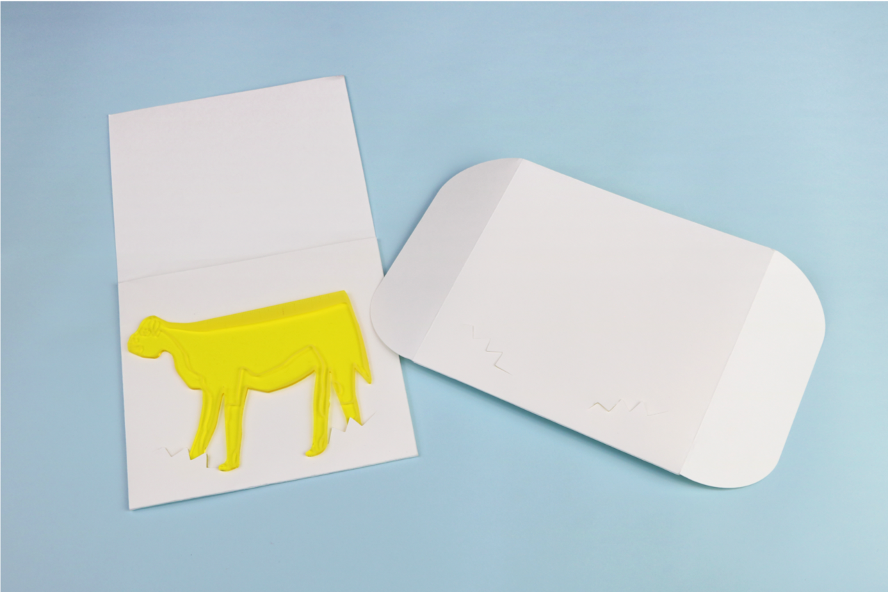

- 


2018.04 -
わたしたちは「パッチワークカメラ」を用いて１台のカメラでは撮れなかった人やモノの 「動き(motion)」の撮影と分析を試みた。パッチワークカメラとは、様々な種類のカメラを 使って同じ動きを様々な視点から撮影することである。わたしたちが担当した章“Capturing Motion: Video set-ups for driving, cycling and walking”では、カメラで撮影できることには限 界があると記述されており、むしろ「何を見落としているか(what’s still missing?)」を考え る必要性があると述べられていた。そこで私たちは、1台のカメラでは撮影に限界があると いう前提に立ち、複数台設置することで1台では撮影できなかった人やモノの動きを撮影で きるのではないかと考えた。
パッチワークカメラで使用する様々なカメラのそれぞれの性能や画角、写り方 を調査するための実践調査を行なった。この調査結果をもとに、本調査ではキッチンカーの 中のお弁当の動きを対象として6台のパッチワークカメラで撮影し、映像を分析した。その 結果、パッチワークカメラで撮影しても対象物が人の動きや物の陰に隠れてしまい、撮影で きていない箇所もあった。ゆえにわたしたちは、パッチワークカメラを研究で導入する際 に、研究で使用するカメラの特性やその設置方法などによって何をどのように撮影できるか を特定するための分析と、その結果どのように表現しうるかを実践的に検討した。本研究で 実践した方法は、パッチワークカメラを実践する前のパイロットスタディとして有効である と提案した。